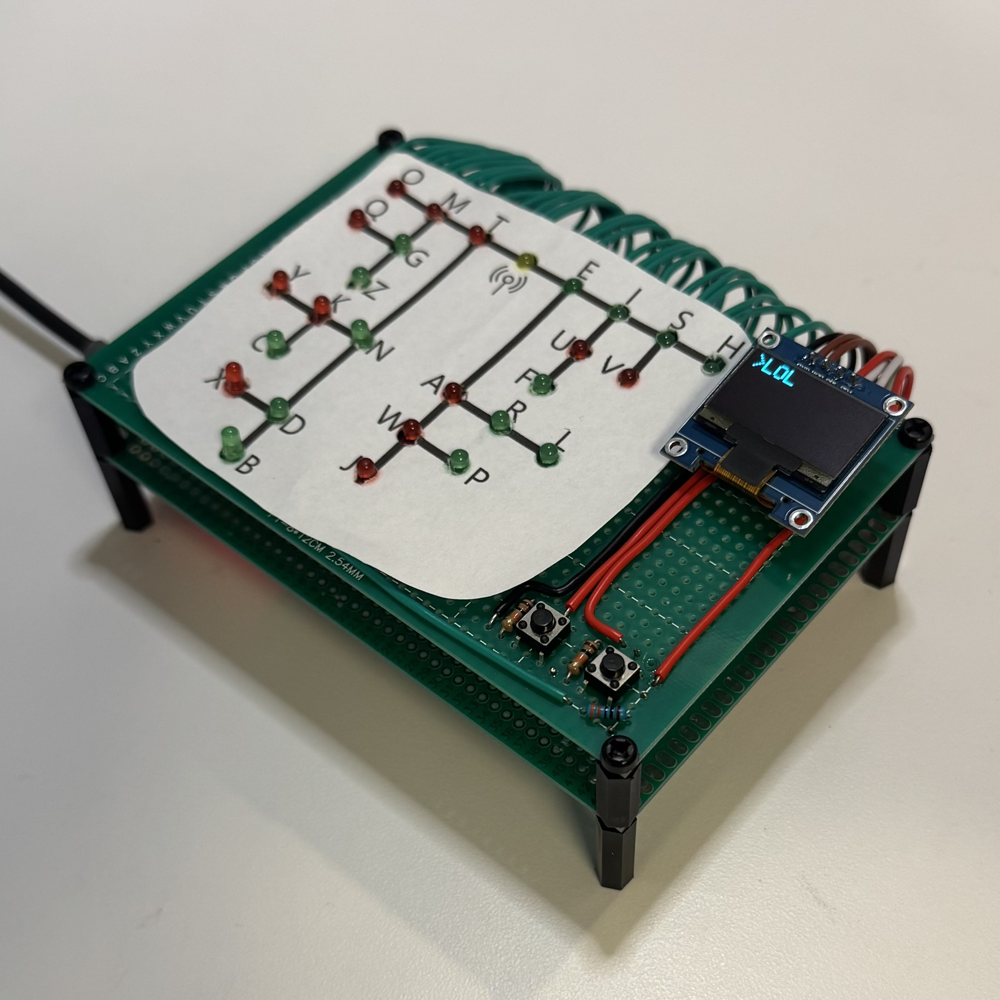
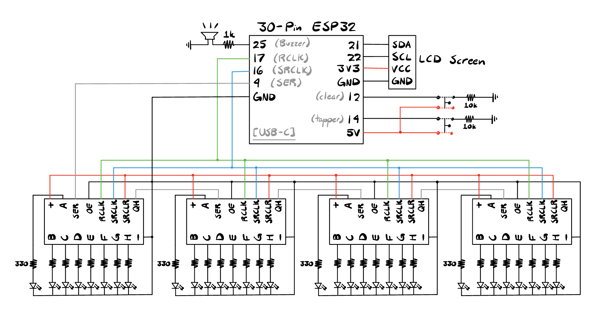
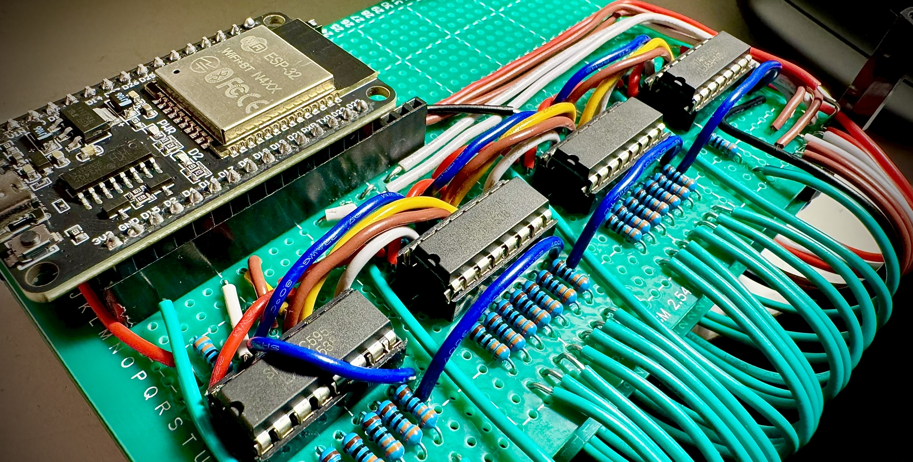
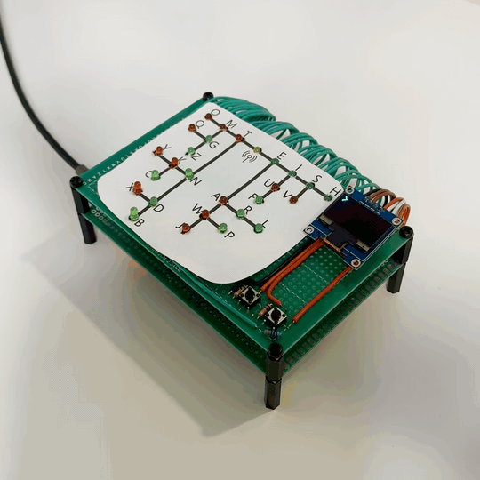
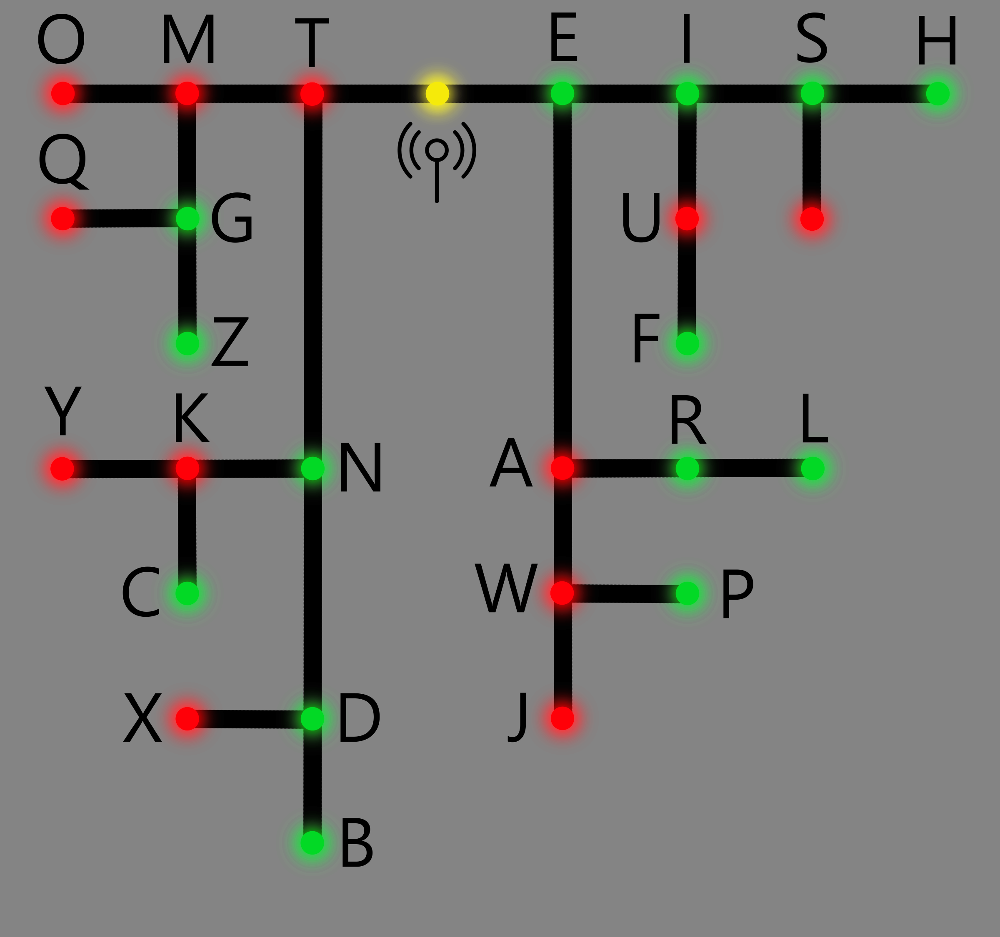

For this embedded systems project, I designed and programmed an interactive Morse Code
Translator using an ESP32, custom input logic, shift registers, and an OLED display. The
device translates Morse code button inputs into readable text while also visually
demonstrating the logic flow of Morse code through a dedicated LED system. The completed
system combines real-time input processing, embedded firmware development, hardware
expansion, and user interface design into a compact standalone device.
Morse code encodes characters using sequences of short and long pulses. In this project, short button
presses represent dots while long presses represent dashes. The ESP32 monitors button timing, stores
incoming sequences, and uses a finite state machine to determine when a character entry is complete.
After a timeout period, the sequence is translated into its corresponding character and displayed on the
OLED screen. To make the translation process more intuitive, the system also uses LEDs to visually
represent Morse code progression, with green LEDs corresponding to short presses and red LEDs
corresponding to long presses.

The hardware is centered around an ESP32 30-pin development board connected to:
- 27 LEDs (26 Letters, 1 Signal)
- Two push buttons (Tapper and Clear)
- Four daisy-chained 74HC595 shift registers
- A 128x64 OLED display
- A piezo buzzer
Because the ESP32 does not provide enough GPIO pins to
directly drive 27 LEDs, four 74HC595 shift registers were
used to serially control the entire LED array using only
three GPIO lines. This significantly reduced pin usage while
simplifying LED expansion. The OLED display communicates
over I2C and provides four writable text rows with a movable
cursor indicator showing the active input line.


The firmware was written in C++ using the ESP32 Arduino framework. Timing-sensitive button
handling was implemented using microsecond-resolution ESP32 timers to distinguish between
short and long presses. Each Morse code input is stored in an array and evaluated after a
one-second inactivity timeout. The translation system compares stored sequences against
known Morse patterns using memcmp() matching before outputting the translated character to
the display. The implementation supports:
- Alphabetic characters
- Numbers
- Several punctuation symbols
A secondary control button allows users to cycle between OLED text lines, while a long
press clears the display contents and resets stored text buffers.
The single source code file implementing this project can be found below. It is written
in C++, and additional libraries utilized are listed as needed:
David Denny Morse Code Project File

One of the more unique aspects of the project is the LED visualization system. As Morse code is entered, the firmware generates LED masks corresponding to the active Morse sequence and shifts them into the 74HC595 register chain. This allows the device to visually demonstrate how Morse code characters branch and evolve, effectively turning the project into both a translator and an educational visualization tool.

This project combined several areas of embedded systems engineering including real-time input processing, finite state machine design, GPIO expansion, OLED display control, and hardware/software integration. Beyond simply translating Morse code, the project was designed to visually teach Morse code structure through interactive LED feedback and responsive user interaction. Overall, it served as a strong exercise in embedded firmware architecture and peripheral integration using the ESP32 platform.